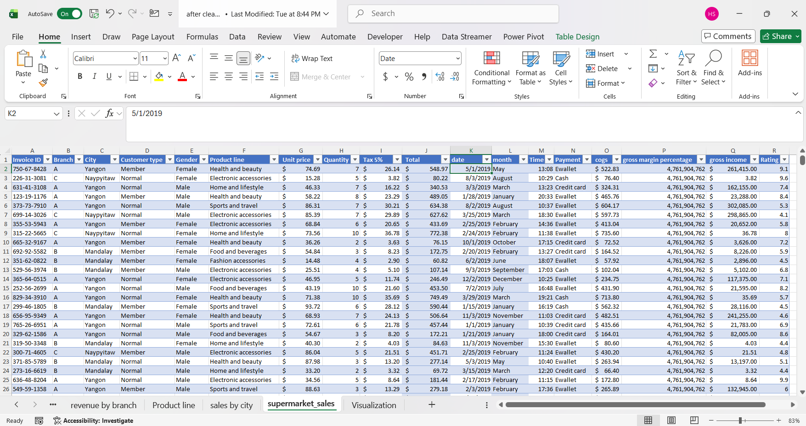
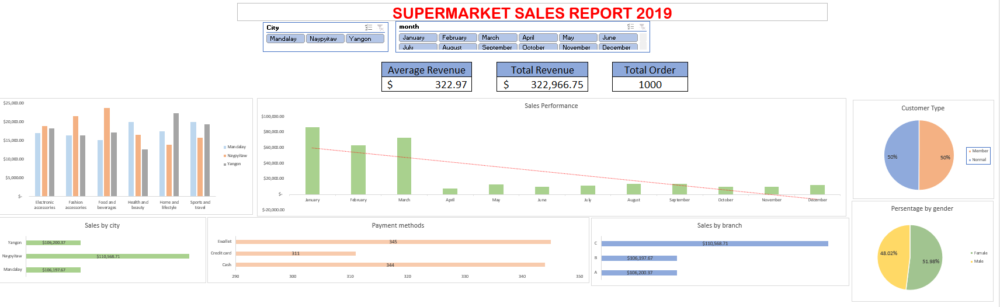
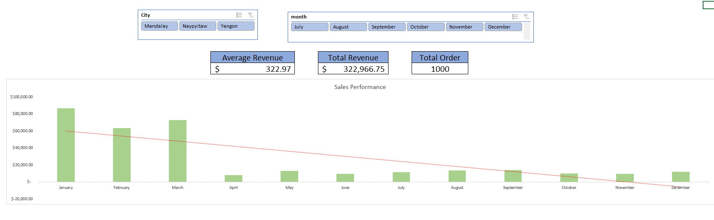
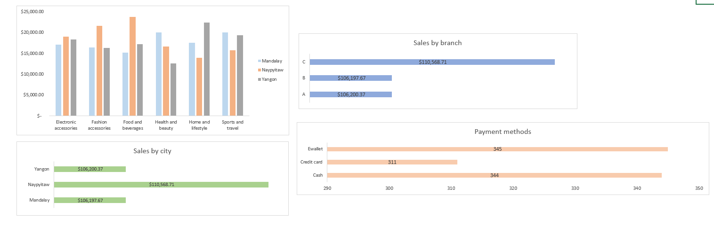
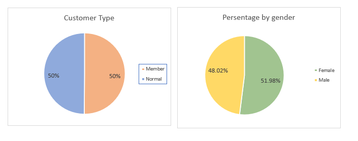

Portofolio Details
Consumer behavior and sales performance analysis using Microsoft Excel — 2019 Supermarket Case Study. Analisis perilaku konsumen dan kinerja penjualan menggunakan Microsoft Excel — Studi Kasus Supermarket 2019.
Consumer Behavior & Sales Performance Analysis: 2019 Supermarket Case Study
Project Overview
In an era where data is the backbone of decision-making, the ability to translate raw transactional records into actionable business intelligence is crucial. This portfolio showcases a comprehensive end-to-end data analysis project focused on the 2019 Supermarket Sales Performance. The project begins with a deep dive into the Data Integrity & Engineering phase — utilizing a dataset of 1,000 unique transactions across three regional branches (Yangon, Naypyitaw, and Mandalay) — followed by rigorous data cleaning, standardization, and structured Excel-based reporting. Following the data preparation, the project transitions into a Strategic Visualization phase, synthesizing complex variables into an intuitive, interactive dashboard.
Introduction
The following analysis provides a comprehensive overview of the 2019 sales performance for supermarket operations across three key regions: Mandalay, Naypyitaw, and Yangon. This report evaluates core business health through KPIs such as total revenue and transaction volume, while identifying critical trends in consumer behavior and geographical performance.
Dataset

The dataset was meticulously cleaned and structured into an official Excel table format, ensuring dynamic scalability and consistent data types. Key engineering steps included extraction of the month attribute for time-series analysis and standardization of financial metrics. The data architecture was organized across dedicated worksheets for raw data, pivot tables, and final visualizations.
Sales Dashboard

Sales Performance Analysis

The year started with a high volume of sales in Q1, peaking in January at over $80,000. The "Sales Performance" chart reveals a steady downward trend, with monthly revenue stabilizing at significantly lower levels from April through December.
Regional & Operational Insights

Naypyitaw (Branch C) emerged as the leading location with $110,568.71 in total sales. Regional product strengths: Naypyitaw dominates Food & Beverages, Yangon leads in Home & Lifestyle. Payment methods are nearly equal: E-wallet (345), Cash (344), Credit Card (311).
Customer Demographics

The customer base is split 50/50 between Members and Normal shoppers, indicating successful loyalty program penetration. Gender distribution is nearly even: Female 51.98% and Male 48.02%, suggesting broad appeal across a diverse audience.
Conclusion & Strategic Summary
The 2019 analysis reveals a business with a strong operational foundation but facing a significant growth challenge post-Q1. Key strategic recommendations:
- Implement seasonal marketing strategies to replicate January's high-performance levels.
- Leverage Naypyitaw's success in Food & Beverages as a blueprint for cross-promotion in other branches.
- Introduce targeted rewards for credit card users to balance payment methods and increase average transaction value.
Analisis Perilaku Konsumen & Kinerja Penjualan: Studi Kasus Supermarket 2019
Gambaran Proyek
Di era di mana data menjadi tulang punggung pengambilan keputusan, kemampuan mengubah catatan transaksi mentah menjadi kecerdasan bisnis yang dapat ditindaklanjuti sangatlah krusial. Portofolio ini menampilkan proyek analisis data end-to-end yang komprehensif berfokus pada Kinerja Penjualan Supermarket 2019. Proyek dimulai dengan fase Data Integrity & Engineering menggunakan 1.000 transaksi unik dari tiga cabang regional (Yangon, Naypyitaw, dan Mandalay), dilanjutkan dengan pembersihan data, standardisasi, dan pelaporan berbasis Excel yang terstruktur, kemudian beralih ke fase Visualisasi Strategis dalam bentuk dashboard interaktif.
Pendahuluan
Analisis berikut memberikan gambaran komprehensif tentang kinerja penjualan tahun 2019 untuk operasi supermarket di tiga wilayah utama: Mandalay, Naypyitaw, dan Yangon. Laporan ini mengevaluasi kesehatan bisnis inti melalui KPI seperti total pendapatan dan volume transaksi, sekaligus mengidentifikasi tren penting dalam perilaku konsumen dan kinerja geografis.
Dataset
Dataset dibersihkan dan distrukturisasi secara cermat ke dalam format tabel Excel resmi. Langkah-langkah rekayasa data utama meliputi ekstraksi atribut bulan untuk analisis time-series dan standardisasi metrik keuangan. Arsitektur data diorganisasi dalam worksheet terpisah untuk data mentah, pivot table, dan visualisasi akhir.
Dashboard Penjualan
Analisis Kinerja Penjualan
Tahun dimulai dengan volume penjualan tinggi di Q1, mencapai puncak di Januari lebih dari $80.000. Grafik menunjukkan tren penurunan yang stabil dengan pendapatan bulanan menstabilkan pada level lebih rendah dari April hingga Desember.
Wawasan Regional & Operasional
Naypyitaw (Cabang C) muncul sebagai lokasi terdepan dengan total penjualan $110.568,71. Kekuatan produk regional: Naypyitaw mendominasi Makanan & Minuman, Yangon unggul di Rumah & Gaya Hidup. Metode pembayaran hampir merata: E-wallet (345), Tunai (344), Kartu Kredit (311).
Demografi Pelanggan
Basis pelanggan terbagi 50/50 antara Member dan pelanggan Normal, menunjukkan penetrasi program loyalitas yang sukses. Distribusi gender hampir merata: Perempuan 51,98% dan Laki-laki 48,02%, menunjukkan daya tarik luas terhadap audiens yang beragam.
Kesimpulan & Ringkasan Strategis
Analisis 2019 mengungkapkan bisnis dengan fondasi operasional yang kuat namun menghadapi tantangan pertumbuhan signifikan pasca-Q1. Rekomendasi strategis utama:
- Terapkan strategi pemasaran musiman untuk mereplikasi level kinerja tinggi di bulan Januari.
- Manfaatkan kesuksesan Naypyitaw di Makanan & Minuman sebagai cetak biru promosi silang di cabang lain.
- Perkenalkan reward khusus pengguna kartu kredit untuk menyeimbangkan metode pembayaran dan meningkatkan nilai transaksi rata-rata.